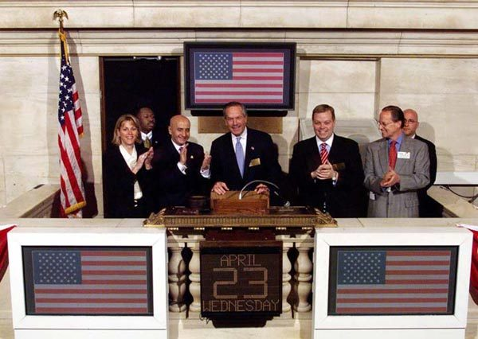

unskilled labor
… may be unskilled labor but one …
非熟练工、谁都能干的活
本来指不需要专门训练的体力活。前面有 By some argument，是「有一种说法」，不是作者直接下的判断。
附笔是 2004 年第二版新加的，三篇互不相连的短文，作者说是冲澡时想到的。第一篇拿公司食堂的厨师和总裁办公室比：谁的本事查得出来，谁的查不出来，运气在里面占多少。第二篇从一个赶 7:08 快车的纽约通勤客讲起，谈不知道时刻表会怎样，又跳到央行托汇率和打架。第三篇只有三段，作者试着把整本书压成一句话。读的时候抓一条线：前面十几章讲随机性怎样骗人，这里有一篇反过来谈它的好处。
正文到第 14 章和后记已经收尾，附笔是作者出第二版时补的。三篇各自回头接前面的章：第一篇用到第 2 章的牙医和俄罗斯轮盘、第 8 章的猴子打字机，还有作者说的遍历性（书里写「第 8 章讲过」，其实在第 3 章 §9 和第 9 章 §5）；第二篇接第 10 章 §8 的布里丹之驴和第 11 章 §4 西蒙的「够好就停」；第三篇对着整本书说话。这是全书正文的最后一页。
§3 作者先说「关于幸福的研究显示」，接下来几段的依据换成了他自己的生活：坐慢车、不用闹钟、写书和写论文。研究确实有，但后面那些是他的经验和偏好。读的时候分清哪一句靠研究，哪一句靠他自己。
随机性只会骗人吗，还是有时候也帮人？
读的时候带着这几个问题。不用先找答案，读完回来对照「检查一下理解」。
三篇各自成篇，中间没有过渡，小标题就是三件事。第一件（§2）从厨师和总裁的对比起步，借来第 2 章的牙医和轮盘、拉斯维加斯的赌桌、第 8 章的猴子打字机，再编出一对抛硬币的双胞胎，最后点名纽交所主席，又说到央行行长，一路离交易室越来越远。第二件分成两个小标题：§3 先是一顿被时刻表打断的晚饭，然后变成作者的个人随笔（慢车、闹钟、写书和写论文）；§4 突然从个人生活跳到央行托汇率，又跳到打架和国家之间的冲突，读到这里会觉得「突然跳了」。第三件（§5）只有三段，是全书正文的最后几行。赶时间就只读 §5。
这一页就是原书和译本的附笔，一共 5 节。粗体是本站给的节名，后面是档和译本字数；下面是译本的小标题和这一节在译本电子书里开头的几个字（搜它就能跳过去），再下面是英文原文的开头。「先读」是这一章的骨架，「有空」好看、跳过不丢线，「可跳过」读不读都行。读完打个勾。
先把这一页用到、作者默认你懂的几个概念讲一遍。讲的是概念本身，作者拿它推出什么，读原书时自己看。别页讲过的概念，点链接过去看。
上市公司归股东所有，股东人多又分散，就雇职业经理人来管，最高的那位叫首席执行官（CEO）。股东选出董事会，由董事会替他们定经理的薪酬。CEO 不是公司的主人，也不是创业的人，拿的是工资、奖金和股票期权。
经济学把这叫委托代理问题：出钱的人（委托人）和做事的人（代理人）赚赔不对称。好比你请人代练游戏账号：赢了他收钱，输了掉的是你的段位。他最多丢掉这份活，已经收的钱不用退。
在这一页：§2 双胞胎高管和纽交所主席两段的前提。作者没用「委托代理」这个词。
同一件事独立地重复很多次，结果的平均值会越来越靠近它的期望值。抛 10 次硬币，出 7 次正面不稀奇；抛 1 万次，正面的次数有九成五的把握落在 4900 到 5100 之间。
赌场就靠这个吃饭：每一把它都可能输，几十万把下来，它的那一点点优势一定会显出来。反过来，只有一次的事，结果再大也说明不了它背后的概率是多少。
作者在 §2 把它和他说的遍历性当成一回事。两者不同：大数定律讲同一件事重复多次的平均；遍历性讲一个人沿着时间的平均，和一群人同一时刻的平均，相不相等。这一节的意思（多重复几次，真本事就显出来）用大数定律就够了。
在这一页：§2 拉斯维加斯那张赌桌，一次押一百万和分成一百万次押一美元。
经济学家西蒙（第 11 章 §4）发现，人做决定时多半不是找最好的，而是找到「够好」的就停，他造了个词 satisficing。后来心理学家把人分成两种倾向：一种事事要挑最好的（maximizer），一种定好标准、碰到够格的就收手（satisficer）。
买一部手机：前一种人把所有评测看完、比完价，买了还惦记有没有更好的；后一种人先想好要什么，第一部符合的就买。
在这一页：§3 那位不知道时刻表的通勤客，作者说他会被迫变成后一种人。
一些国家的央行承诺，本币和美元（或别的货币）按一个固定比价兑换，这叫盯住汇率。有人大量卖本币，央行就拿手里的外汇储备把本币买回来，托住比价，这叫干预。储备是有限的，托不住了，只好宣布本币换得更少的美元，这就是贬值。
麻烦在于预期会自己实现：谁都怕贬值后手里的本币缩水，一有风吹草动就抢着卖，卖的人越多，储备耗得越快，贬值就真的来了，像银行挤兑。另一种做法是只承诺一个区间：比价可以在上下几个百分点里自由晃，碰到边界央行才出手。
在这一页：§4 前两段先讲固定的比价，再讲允许波动的区间，作者拿两者对比。
博弈论（game theory）研究几个人互相猜对方怎么做。石头剪刀布是最简单的例子：你要是总出石头，对手出布就把把赢；最稳的打法是三样各按三分之一的机会随机出，谁也占不到你的便宜。点球也一样，守门员总往左扑，罚球的人就往右踢。
这种「按概率随机选」的打法叫混合策略。它的好处不在于随机本身，而在于对手没法利用你的规律。
在这一页：§4 第三段从汇率转到打架和国家冲突，用的是这个道理。evolutionary game theory 是把它用到动物行为上的分支。
按在书里出现的顺序排，标题前是节号。只讲到读懂这一页需要的程度。
§2 说的「高管」是上市公司里拿薪水的管理层，作者特意把自己掏钱冒险的创业者排除在外。他说数量分析（quant）圈里管只会装样子的人叫 empty suit（空西装），这些人擅长的是在公司里往上爬，标配是 MBA 学位和 PowerPoint 简报。双胞胎那段的「猴子打字机」接第 8 章 §1：猴子足够多，总有一只碰巧打出一首诗，见幸存者偏差；「赢家通吃」接第 10 章的非线性。央行降息是为了让借钱便宜、刺激经济；作者在这里问的是，事后经济好转了，能不能分清功劳。

2003 年他的薪酬方案曝光，约 1.875 亿美元，其中近 1.4 亿是递延薪酬，舆论哗然，他当年辞职（书里说的「2 亿」是取整）。纽交所当时是会员所有的非营利机构，2006 年才改成上市公司。2004 年纽约州总检察长 Spitzer 起诉要他退钱，2008 年州上诉法院以纽交所已改成营利公司、不能再按非营利法追诉为由驳回，没有就薪酬是否过高下判断。
纽约有很多人住在郊区，每天坐通勤火车进城，晚上再坐回去。郊区线分快车（express，中途少停）和慢车（local，站站停），班次按固定时刻表发车，晚上越晚越稀。地铁不一样：班次密，没人记时刻表，到站等下一班就是。书里的 MTA 是纽约大都会运输署，管地铁、公交和两条通勤铁路。§3 后半还有几样小东西：米其林指南给餐厅评的三星，健身房的爬楼梯机 Stairmaster，牙医打的局部麻药 Novocain。
§3 作者回提两处。第 10 章 §8 的布里丹之驴：一头又饿又渴的驴，离草料和水一样远，定不下先去哪边，结果又饿又渴而死；随便推它一把，僵局就破了。第 11 章 §4 讲过西蒙的 satisficing，作者在这里说那是 satisfying 和 maximizing 的合成，第 11 章写的其实是 satisfy 和 suffice（满意加足够），以第 11 章为准。
Fluctuat nec mergitur 是拉丁文，「随波起伏，但不沉没」，巴黎的城市格言。城徽上的船从中世纪就有，格言是 1853 年在奥斯曼主持巴黎改建时正式写进城徽的。2015 年 11 月巴黎恐怖袭击之后，这句话被写满街头，成了市民的口号。作者拿它说允许汇率晃一晃的央行。
作者没有点他的名。§4 第三段说政府要让敌国相信自己「疯到」有时会为一点小事过度反应，国际关系里常拿来对照的是尼克松的「疯子理论」：他想让北越相信他什么都做得出来。这个说法出自他的幕僚 Haldeman，一般认为没换来什么让步。
故事见《巴比伦塔木德》的《安息日》篇：一个想皈依犹太教的外邦人，要人在他单脚站着的工夫里教完整部《托拉》（摩西五经）。另一位拉比 Shammai 把他赶了出去；希勒尔答：你自己厌恶的事，不要对别人做，这就是整部《托拉》，其余都是对它的解释，去学吧。书里把来人说成「特别懒的人」，是作者的讲法。
读英文原文时值得停一下的词和句：交易员的行话、作者的反话和双关、熟词生义。灰色斜体是原句里连续的几个词，在英文电子书里搜它就能找到；标「每个字都认识」的，是每个词都眼熟、合起来意思却变了的，最容易读错。点「记下」收进词本。
对着译本读这一章时，下面这些地方会把人读歪。方框里是译本的原句，在译本电子书里搜它就能找到；灰色斜体是英文原文那一处。只收意思错了、反了、漏了的，措辞上的出入和台湾用语不收。全书的勘误汇总在译本勘误。
… as they did with the New York …
译本：「他們和紐約證券交易所主席理查．葛拉索」
原文是「就像 2003 年他们给纽交所的 Grasso 开的那样」：股东付了钱，Grasso 拿了钱。译本说成股东「和」Grasso 一起做这件事，读来像 Grasso 也是付钱的一方，这个例子就不成立了。
… instead of a maximizer (Chapter …
译本：「而不是極大滿意者」
maximizer 是事事要挑最好、从不满足的人，下一段英文换成 optimizer，说的是同一种人（译本那里作「優化者」）。「極大滿意者」读来像「最满意的人」，会把谁更快乐弄反。
… particularly with the scrambling of potentially …
译本：「自我實現的訊息紛至沓來時」
scramble 是把信号搅乱，像加密电话把声音打乱。原文说不确定性的好处，是把那些有害、会自己实现的信号搅乱，让人读不出来。译本说成这类信息蜂拥而来，好处从哪来就看不懂了。这一节的小标题也是同一个词。
… the rest is just commentary …
译本：「其餘只是評論」
commentary 在这里是经书的注释、解说：其余的一切都是从这一条推出来、对它的展开。「评论」读来像旁人的看法、可有可无，作者要讲的「生成器」和其余部分的关系就丢了。
… to find out what my generator is …
译本：「置入式」
embedded 紧跟在搜到的这句后面，是「嵌在里面的」，指东西和它所在的场合连在一起。「置入式」在台湾多指置入性行销，读来像广告植入，意思偏了。
读完这一章再看。下面是作者在这一章里的主张，由本站按主张之间的逻辑重新组织，不按原书的顺序；每条后面是节号，拿不准就回书里那一节再读一遍。
他说自己只用逻辑推。厨师天天做菜，靠运气做对一次，混不过第一千次；赌桌上一次押一百万看不出赌场的优势，拆成一百万次一美元就看得出。他把这叫遍历性，也就是大数定律。总裁只做少数几个大决定，环境的影响大得多，却只按结果拿报酬，好比一把押上全部的赌客。
§2他把这叫逆规则，限定是「一般来说」，并且排除自担风险的创业者。双胞胎高管抛硬币做决定，一个大败被解雇但小有积蓄，一个大胜成了巨富，风险由股东担。他坚持这不是社会问题，是投资人的问题，被随机性愚弄的是股东；官员的贡献可能更难评。他说这个问题也许不是治不好。
§2不知道时刻表的通勤客会吃完饭再走，被迫做「够好就行」的人。他引幸福研究说，逼自己事事最优的人会有些苦恼，又承认因果说不清。他「深信」人不是为时间表而生的，依据是自己的经历：不用闹钟、坐慢车、写书的篇幅不能事先知道。
§3汇率钉死时，跌一点点就被读成贬值的先兆，抛售会自己把贬值招来；允许在区间里晃，小跌就不算消息。同样，一个人或一国政府的反应门槛要是固定的，别人就欺负到门槛为止；让人猜不透，才吓得住人。
§4希勒尔给的不是摘要，而是能推出其余一切的那一条。作者说他花了一辈子才找到自己的：我们偏爱看得见的、嵌在情境里的、个人的、有故事的、摸得着的，轻视抽象的。他说我们身上好的（美学、伦理）和错的（被随机性愚弄），似乎都从这里来。
§5合起来：随机性藏起本事，只看结果就会把运气当成本事付钱；可一点随机性也护着人，免得事事算到尽头。最后他把全书压成一句话：好的和错的，似乎都从「偏爱具体、轻视抽象」流出来。
Shareholders, in the end, are the ones who are fooled by randomness.— §2。本站译：说到底，被随机性愚弄的是股东。
第一件事的落脚句，口气是下判断，而且把书名嵌了进去：前面十几章被愚弄的是交易员和听他们说话的人，这里换成了掏钱给高管的人。关键是 in the end：总裁也许真靠运气，但吃亏的不是他。译本：「到頭來，被隨機性愚弄的人是股東」意思和口气都到了。
We favor the visible, the embedded, the personal, the narrated, and the tangible; we scorn the abstract.— §5。本站译：我们偏爱看得见的、嵌在情境里的、个人的、讲成故事的、摸得着的；我们看不起抽象的。
五个并列的形容词，最后一个转折收住。scorn 比「不喜欢」重得多，是看不起。这句话是全书的压缩版，读的时候留意它说的是「我们」，作者把自己也算在里面。译本：「但我們蔑視抽象之物」里的「蔑视」译出了这股劲。
这本书 2004 年出第二版，书里讲的多是 1980–2003 年的事。下面挑出这一页里能被后来的研究或事情检验的说法，分「书里 / 当时 / 今天」几栏，并给一个结论。结论判的是标题里「书里的说法：」后面那一句。全书的这一节汇总在今天怎么看。
读完作者的主张，再看它站不站得住。每一块摆出三样：主流怎么看，作者怎么看，本站的评论。最后一句是本站对这一页的总体判断。
主流看法：管理学常拿「CEO 效应」量化：公司业绩的差异有多少能归到换了谁当 CEO，以往的估计多在一成五左右。Fitza 2014 年在《战略管理杂志》用模拟对照指出，这里面大半和纯运气分不开，能明确排除运气的只有约 4% 到 5%。Quigley 和 Graffin 2017 年反驳说他的方法高估了运气，争论还没定。
作者的看法：决策少、不能重复，结果主要看环境，总裁的本事和公司业绩只有很弱的联系；但创业者不在此列，因为他们押上了自己。§2
本站的评论：论证漂亮，而且比 Fitza 那样专门去算「这里面多少是运气」早了十年，这是这一页最站得住的部分。可他给创业者的豁免是道德上的理由，不是证据上的：照他自己第 8 章的猴子打字机，成功的创业者同样可能是碰巧那一只。说个子高是「唯一」看得见的成功征兆，书后列了外貌和职场成功的研究，可「唯一」是挖苦，不是结论。
主流看法：博弈论支持他 §4 第三段：混合策略就是让对手无法利用你的规律，Schelling 1960 年讲核威慑，也说留一点给运气的威胁更可信。汇率的区间则未必护得住：英镑 1990 年 10 月加入欧洲汇率机制，允许上下各 6% 的区间，1992 年 9 月 16 日（「黑色星期三」）仍被抛售逼出了机制。
作者的看法：噪声让人不把小跌读成信号，难以预测是强大的威慑；他深信人生来该像消防员那样过日子，不是为时间表而生的。§3 §4
本站的评论：区间能防的是「被一点小波动吓到」，防不住市场整体不信这个比价，英镑就是例子，作者没谈这一层。打架和国家那一段有理论撑着。至于不用闹钟、坐七个半小时的慢车，是他的生活方式，读来愉快，可以当作一种选择，不必当成道理。
主流看法：心理学有不少结果和这句话同向：人对一个有名有姓的受害者比对一串统计数字更慷慨，越容易想起画面的风险，越被高估（Tversky 和 Kahneman 1973 年的「可得性」启发法）。
作者的看法：我们偏爱看得见的、具体的、有故事的，轻视抽象的；好的和错的似乎都从这里来。§5
本站的评论：作为全书的压缩，这句话很准：牙医和轮盘、看盘的频率、幸存的基金经理，都是「眼前这一个」挤掉了「所有可能的那些」。「一切好的和错的」说得太宽，他自己也加了 seems。值得带走的是它的用法：读到一个打动你的故事，先问它背后那个看不见的分母是什么。
本站的总体看法：第一件事最硬，后来的管理学研究有一部分站到了他这边；他对创业者的豁免要打折扣。第二件事一半是理论（混合策略），一半是个人偏好，汇率那段说得太顺。第三件事是全书最好的一个总结，读完整本书再看它，比一开始就看更有分量。
先在心里答，再点开。答错的那题，回书里把对应那一节再读一遍。
厨师天天做、天天有人吃，一千次里靠运气次次做对几乎不可能，本事很快就和结果对上了。总裁几年只做几个大决定，结果又受环境左右，只有寥寥几个样本，分不出是本事还是运气。
一次押一百万，结果只有翻倍或输光两种，看不出什么。分成一百万次，每次平均亏 2/38 美元，合计约亏 5.26 万，上下波动大约只有一千美元，几乎肯定亏在 5 万到 5.5 万之间：赌场的优势一定会显出来。
失败的那个被解雇了，但已经小有积蓄；成功的那个成了巨富。两人都没赔进自己的大钱，押错那一次的亏损由那家公司的股东承担。作者说这就是不对称：风险归股东，好处归高管。
到站的时刻在两班车之间是随机的，等待时间在 0 到 35 分钟之间平均分布，平均等 17.5 分钟，就是书里说的「略多于一刻钟」。作者的意思是：多等这十几分钟，换来不用盯着钟吃饭。
钉死的汇率本该不动，一动就被读成央行托不住、要贬值了，大家抢着卖，反倒把贬值招来。允许晃动之后，小幅下跌是常事，没人把它当消息，也就不会一窝蜂地卖。
门槛是固定的，大家就知道可以骂到第 17 次为止，正好占满你的忍耐。要是有时一句玩笑就发火，别人摸不清底线，就不敢试。
摘要是把书缩短；希勒尔给的是一条原则，其余的教导都可以从它推出来，所以「其余都是注解」。作者想照这个样子，给全书找一条能推出其余部分的话。
用一句话说这一页：
想一想：你的日子有没有被一张时刻表管着（日历上排满的会、每天七点的闹钟、季度目标）？要是某一样变得不那么确定，你会更焦虑，还是像作者说的那样更自在？哪一样你愿意试着放松一点？
读过又忘了，从这里想起来。挑的是这一页最值得记住的故事和说法，不按原书顺序；每条后面是节号，想细看就回书里那一节。全书各页的这一节都收在全书回顾。
一句话：本事要在重复里才看得出；决定越少越大，越容易把运气当成本事付钱。
分不清盐和糖的厨师，吃的人一尝就知道；靠运气做对一次，混不过第一千次。总裁几年才做几个大决定，没人尝得出来。
§2两兄弟一样高、一样有 MBA，偷偷抛硬币做相反的决定。一个大败被解雇但小有积蓄，一个成了巨富。风险由股东担，好处归高管。
§2郊区通勤客 6:58 打断谈话冲去车站，账单留给你。要是他不知道时刻表，就会吃完饭再慢慢走过去，多等的不过一刻钟出头。
§3期刊编辑问作者要写多长，他头一回觉得写作没意思。他给自己定了规矩：篇幅必须没法事先知道，看得见结尾就不写了。
§3门槛固定的人，别人就骂到门槛为止。有时一句玩笑就发火的人，没人敢试他的底线。国家之间也一样。
§4希勒尔拉比没做摘要，给了一条能推出其余一切的原则。作者照样给出自己的一句：我们偏爱具体的、有故事的，轻视抽象的。
§5